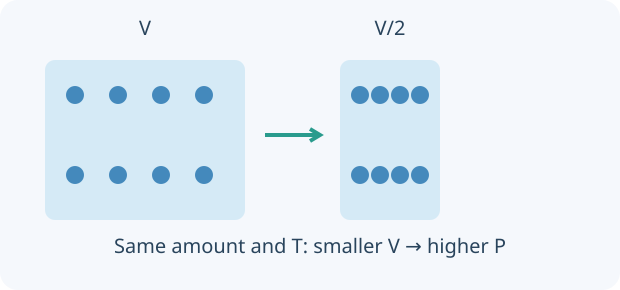

A gas consists of particles moving in many directions. Pressure describes force per area arising from interactions with a boundary; volume is the space occupied; temperature on the kelvin scale relates to mean particle kinetic energy. These are different quantities, so choose the variables and the conditions before naming a gas law.
For a fixed amount of ideal gas, keeping temperature constant gives Boyle’s inverse pressure–volume relationship. Keeping pressure constant gives Charles’s direct volume–temperature relationship. Keeping volume constant gives the pressure law, relating absolute pressure to absolute temperature. Use kelvin for temperature ratios and absolute pressure, not a gauge reading. Real gases can depart from the ideal model.

Isothermal model: compression does not add particles. Pressure and volume vary inversely.
01 · Boyle–Mariotte: pressure and volume
For a fixed amount of gas at constant temperature, PV is constant. Halving available volume increases collision frequency per area in the ideal model, so absolute pressure doubles. Temperature control matters: rapid compression may warm a real sample.
02 · Charles: volume and absolute temperature
At fixed pressure and gas amount, V/T is constant when T is measured in kelvin. A movable boundary lets the gas expand while pressure stays controlled. Doubling a Celsius reading does not usually double the absolute temperature.
03 · Pressure law: heating in a fixed volume
For a sealed rigid container holding an ideal gas, P/T is constant. Higher absolute temperature increases mean particle kinetic energy and pressure. A real tyre approximates fixed volume over a limited range; materials and failure cannot be inferred from the gas law alone.
You can read these explanations without operating the simulator. The practical activities, games and revision below let you apply the ideas and check your reasoning.
For each law, complete three practical observations and questions. Your feedback will help you decide what to try next.
Predict. Investigate. Explain.
Your practical task
Law investigated.
Try the next law, then compare what stays constant in each experiment.
FROM OBSERVATION TO CALCULATION
A worked example
03CONNECT TO EVERYDAY LIFE
Where do we meet gas laws?
A useful scientific model explains a real observation. Always check which conditions are approximately constant.
Boyle–Mariotte · pressure and volume
Air inside a sealed syringe
Push the plunger of a capped syringe and the air occupies less space. Its pressure rises, so pushing becomes harder.
Keep constant
Temperature and amount of gas. Change the volume slowly so the gas can exchange heat with its surroundings.
Connect this to breathing
During inhalation, the thorax expands and pressure in the lungs briefly falls below outside pressure. Air enters. This is a useful link to pressure and volume, but breathing is an open system: the amount of gas in the lungs changes.
A sealed balloon can shrink when its gas cools and expand when warmed. The surroundings allow its volume to change.
Keep approximately constant
External pressure and amount of gas. A balloon is an approximation because its stretched rubber also affects the pressure.
Why does warming help it expand?
Warmer particles move faster. A flexible boundary can expand until the gas pressure balances the surrounding pressure and the membrane’s tension. A freely moving piston under a fixed load is the closer model for Charles’s law.
For a sealed tyre whose volume changes little, warmer gas generally means a higher pressure. A rigid sealed vessel is an even closer constant-volume model.
Keep approximately constant
Volume and amount of gas. Gas-law calculations use absolute pressure; a tyre gauge usually measures pressure above atmospheric pressure.
What is happening to the particles?
As temperature rises, average particle speed increases. Collisions with the container walls become more frequent and transfer more momentum, raising pressure if volume remains fixed.
Atmospheric pressure · measuring with a liquid column
A mercury barometer
Air pressing on a mercury reservoir supports a column inside a sealed-top tube. Change the atmospheric pressure and watch the column rise or fall.
Keep constant
Mercury density and gravity. The balance is P ≈ ρgh: pressure supports the liquid’s weight. This is a pressure measurement, rather than one of the three gas laws.
What does 760 mm mean?
At one standard atmosphere—101,325 Pa or 101.325 kPa—the reference mercury height is about 760 mm. Measure from the reservoir surface to the mercury surface inside the tube, below the near-vacuum.
For a fixed amount of ideal gas, all three follow from PV/T = constant. Always use Kelvin for temperature.
This is a schematic ideal-gas teaching model. Particle number stays fixed; particle sizes, speeds and the vessel are illustrative. The displayed values follow the gas-law equations, rather than measurements from the animation. No real gas is taken to absolute zero.
Scientific model and further reading
The pictures are original labelled concept illustrations, not photographs or measurements. Real-life examples approximate the ideal-gas conditions: check the notes about temperature, pressure, volume and gas amount before applying an equation.
Match the science behind everyday pictures, then sharpen the words you use to explain it. Play at your own pace, with explanations whenever you need them.
Explore 80 questions based on our temperature, pressure and gas-laws lessons. Choose a topic and difficulty, practise with explanations or take a test, then retry the questions you missed.
Includes changes of state, Kelvin, Boyle–Mariotte, Charles, Gay-Lussac, combined gas laws and moles.